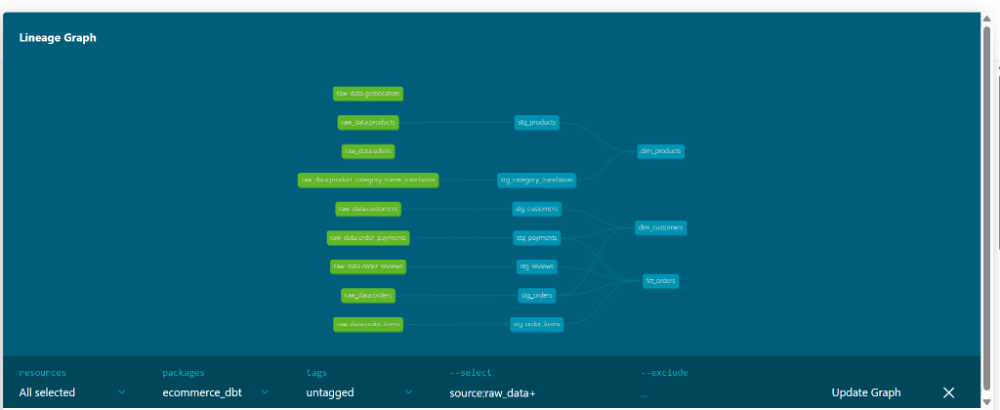
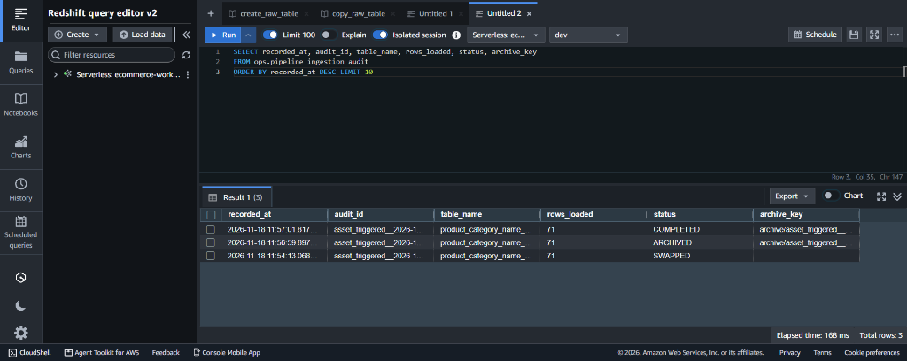
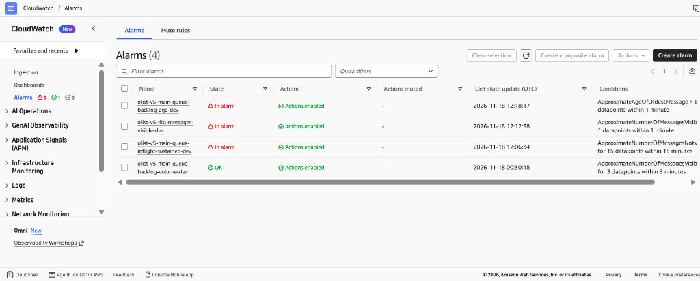

AWS E-Commerce Modern Data Pipeline (V5)
1. Dataset, Scope & Engineering Objectives
5.0.0 live-verified E2E on AWS; 5.0.1 hardened (21/21 unit tests & CI pass)
Scheduled batch polling pipelines waste warehouse compute on empty runs and risk data loss when partial loads fail or malformed files enter a queue. The goal of this project was to evolve a manual batch ETL prototype (V2) into a reproducible, fault-tolerant, push-based CloudOps platform (V5.0.1) while keeping idle AWS compute cost at $0.
2. V5.0.1 System Architecture & Evolution (V2 → V4 → V5)

| Dimension | V2 (Manual Baseline) | V4 (v4.0.1 — Data Core) |
V5 (5.0.0 → 5.0.1 — CloudOps) |
|---|---|---|---|
| Provisioning | Manual AWS Console / CLI | Manual AWS infra + 3-job GitHub Actions CI | AWS CloudFormation IaC (15 core + 4 conditional resources), cfn-lint CI, Native Auto-Rollback, make cfn-delete |
| Orchestration | Manual trigger (schedule=None) |
Airflow 3 Asset + AssetWatcher (20s SQS Long Poll, zero */5 cron) |
AssetWatcher hardened for Airflow 3 Mapping accessor + VisibilityTimeout=900s heartbeat |
| Ingestion & Atomicity | Static COPY / TRUNCATE |
Per-table TEMP TABLE + DELETE/INSERT + Empty-Stage Guard |
Two-Phase Batch Staging + CSV Header Guard + ops.pipeline_ingestion_audit + Two-Proof Safe ACK |
| Failure & Alerting | Silent failure / manual log check | Transaction rollback + ACK retry safety | SQS DLQ (maxReceiveCount=3) + 4 CloudWatch Alarms + SNS Email + DLQ Redrive |

v4.0.1), V5.0.0 (live E2E verified), and V5.0.1 (13 cross-review blind spots hardened).3. Key Engineering Mechanisms & Bug Fixes
- Declarative CloudFormation IaC (Dual Circular Dependency Fix):
infra/cloudformation/template.yamlprovisions S3 (AES256, Versioning, Lifecycle, HTTPS-only bucket policy), SQS + DLQ, split least-privilege IAM (RedshiftS3ReadOnlyRole,AirflowRuntimePolicy,DlqOperatorPolicy), 4 CloudWatch Alarms, and SNS. Resolved circular references betweenS3RawBucket ↔ SqsMainQueuePolicyandSqsMainQueue ↔ SqsDeadLetterQueueby constructing deterministic ARNs with!Subinstead of cross-referencing!GetAtt. - Live Airflow 3 Task SDK Bug Caught & Fixed: During live testing,
extract_messages_from_asset_eventsinitially skipped runs because Airflow 3'scontext["triggering_asset_events"]returns aTriggeringAssetEventsAccessor(collections.abc.Mapping, not a plaindict). Updatedinclude/sqs_parser.pyto validate againstMappingwith unit-test regression coverage. - Two-Phase Batch Staging (DB Atomicity vs. Cross-System Orchestration): In Redshift,
TRUNCATEauto-commits immediately and cannot be rolled back ifCOPYfails. Task 1 validates headers (validate_csv_header), stages all batch CSVs into sessionTEMP TABLEs, and enforcesensure_non_empty_stage (> 0)before touching target tables. Only when 100% of batch files pass staging does Phase B runDELETE + INSERTand writeSWAPPEDintoops.pipeline_ingestion_auditinside a singleautocommit=FalseRedshift transaction (DB-level atomicity—not a distributed 2PC transaction across S3/SQS). - At-Least-Once Recovery, Deterministic Archive & Safe ACK: SQS enforces at-least-once delivery (not strict exactly-once transport), so crashes between S3 archiving, audit logging, and SQS
DeleteMessagetrigger controlled redelivery withinVisibilityTimeout=900s. To handle duplicates idempotently, each S3 event uses a deterministicevent_token(versionId/eTag/sequencer) mapping retries across different DAG Runs to the sameaudit_idandarchive/<audit_id>/<filename>path. If a raw S3 key is missing on redelivery, Task 1 and Task 3 invokeverify_safe_to_ack_when_raw_missing()—permitting SQS ACK only when bothops.pipeline_ingestion_auditshowsARCHIVED/COMPLETEDand the archived S3 key exists—while deferring multi-record SQS ACKs until the full batch finishes.
4. Dimensional Modeling, Quality Scope & FinOps Transparency

raw_data Bronze sources → 7 public_staging Silver views → 3 public_marts Gold Star Schema tables.- Multi-Source Incremental Modeling & Customer Grain Trade-off:
fct_orders(delete+insert) uses anaffected_order_idsCTE across all 4 upstream tables (stg_orders,stg_order_items,stg_payments,stg_reviews) so late updates on older orders (>3 days) are captured. In Olist, every order assigns a new surrogatecustomer_ideven when the same buyer returns (customer_unique_id).dim_customersdeliberately keepscustomer_idgrain (99,441 rows) so downstream BI Star Schema joins withfct_ordersremain strictly 1:1 without fan-out, while lifetime metrics (total_orders,lifetime_spend) are window-aggregated bycustomer_unique_id. - Scope of Automated Testing & CI (Separated by Execution Layer):
- 21 Python Unit Tests + 3 DAG Pytests (Executed on every GitHub Actions CI run): Verify SQS event parsing, Airflow 3
Mappingaccessors, header/empty-stage guards, multi-record deferred ACKs, recovery gates, and DAG import/retry metadata alongside Ruff,cfn-lint, and Astro Docker build. - Offline
dbt parse(Executed in GitHub Actions CI): Validates SQL syntax, model compilation, and schema YAML graphs at $0 AWS cost—this checks structural graph validity rather than running data assertions against a live warehouse. - 11 dbt Schema Tests (Declared in
schema.yml& executed live in5.0.0): Validate warehouse data contracts (unique,not_null,relationshipsbetweenfct_ordersanddim_customers, andaccepted_valuesondelivery_status) against live Redshift Serverless during the5.0.0E2E verification run.
- 21 Python Unit Tests + 3 DAG Pytests (Executed on every GitHub Actions CI run): Verify SQS event parsing, Airflow 3
- Transparent FinOps Mechanics: Idle compute stays at $0 when local Astro stops polling (
astro dev stop), because Redshift Serverless (4 RPUs) bills RPU-seconds only during active queries andAssetWatcherspawns 0 empty DAG runs. SQS Long Polling (~104k requests/month if kept running 24/7) fits inside the 1M/month AWS Free Tier, backed by a $5/month AWS Budget alert (persistent S3/Redshift storage billed separately per GB/month).
5. Live AWS Verification Evidence (5.0.0 Run + 5.0.1 Hardening)
All AWS screenshots below were captured live on us-east-1 during the 5.0.0 release verification (Happy Path 17/17 + Empty-CSV Poison Isolation → DLQ → CloudWatch Alarms → SNS Gmail → DLQ Redrive recovery). Following 5.0.0, release 5.0.1 patched 13 cross-review edge cases verified by 21/21 unit tests, cfn-lint, and aws cloudformation validate-template (pending next live stack re-run).

AssetWatcher on S3 file arrival with zero scheduled empty runs.
ops.pipeline_ingestion_audit logging FAILED (0-row guard) and recovery SWAPPED → ARCHIVED → COMPLETED.
ALARM state.
PipelineAlertTopicPolicy before DLQ Redrive recovery.